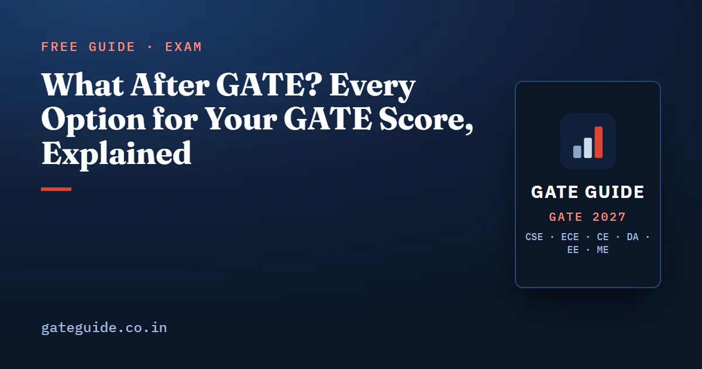

What After GATE? Every Option for Your GATE Score, Explained

What after the GATE exam? A qualifying score opens four doors: an M.Tech or other master's degree with a monthly stipend, a direct PhD, a public sector job, and certain government posts and fellowships. Each door has its own portal and calendar, and most of them open within weeks of the result. This guide walks through the options after a GATE score, in the order you will meet them, using the official rules and the 2026 calendar as a guide.
In this guide
Key takeaways
- A GATE score is valid for three years, but each institute or recruiter decides which years it accepts.
- M.Tech at IISc and the IITs: you apply to each institute, and the offers arrive through COAP.
- M.Tech at NITs, IIEST Shibpur and several IIITs and other centrally funded institutes runs through CCMT, a single counselling.
- M.Tech financial assistance is ₹12,400 a month, generally for 22 months. A direct PhD carries ₹37,000 a month, rising to ₹42,000.
- PSUs recruit under their own notices; POWERGRID, NTPC and GAIL had GATE 2027 notices out by 10 October 2026.
- In 2026, most admission activity ran from April to August. Missing one registration window closes that route for the year.
First, what a score lets you do
Start with the official wording, because it is narrower than most people think. The GATE 2027 brochure says qualified candidates can seek admission, with possible financial assistance, to master's and direct doctoral programmes in engineering, technology and architecture. It adds doctoral programmes in engineering, science and humanities, at institutions supported by the Ministry of Education and other government agencies.
It also says some colleges use GATE for postgraduate admission without the ministry scholarship, and that several PSUs use the score for recruitment. Then comes the disclaimer: qualifying does not guarantee admission, a scholarship or a job.
| Option | Who runs it | Where you apply |
|---|---|---|
| M.Tech at IISc and IITs | Each institute | Its own admission portal; offers on COAP |
| M.Tech at NITs and similar | CCMT | One CCMT registration and choice list |
| Direct PhD | Each institute | Its own admission portal |
| PSU job | Each PSU | Its own careers portal |
| Government posts and fellowships | The body concerned | Its own advertisement |
In one line: GATE gives you a score; every seat, stipend and job after that belongs to the institute or employer that offers it.
Route one: M.Tech at IISc and the IITs, through COAP
COAP, the Common Offer Acceptance Portal, began in 2017. It is not an application portal. You apply to each IIT or IISc department you want on that institute's own site. COAP is where all the resulting offers appear in a common window, so you can choose among them round by round.
Three facts from the COAP 2026 site are worth knowing. COAP 2026 was coordinated by IIT Roorkee, and its participants were IISc Bengaluru, 23 IITs and one PSU, NPCIL. It accepted GATE 2024, 2025 and 2026 scores. And registration is free, but institutes have made the COAP registration number mandatory on their own application forms.
The site also says the organising institute of the previous year's GATE coordinates COAP each year. By that rule, COAP 2027 would go to IIT Guwahati, which ran GATE 2026. Confirm the address when the 2027 portal opens rather than bookmarking an old one.
COAP 2026 offers ran to a tenth round, whose decision window was extended to 13 July 2026. Once you choose "Accept and Freeze", the institute takes over, and fees and reporting follow its own instructions.
Route two: M.Tech at NITs and others, through CCMT
CCMT, the Centralized Counselling for M.Tech., M.Arch. and M.Plan. admissions, works differently. One registration, one locked list of choices, one common allotment across the NITs, IIEST Shibpur and several IIITs and centrally funded institutes.
CCMT 2026 used GATE scores of 2024, 2025 and 2026. Registration and choice filling opened on 15 May 2026, and the Round 1 allotment came on 12 June 2026. After each allotment you declare Freeze (keep the seat), Slide (upgrade only within the same institute) or Float (upgrade anywhere on your list).
COAP and CCMT are separate systems with separate fees and dates. If you want both IITs and NITs, register on both. M.Tech admission through COAP and CCMT covers the round options in detail.
Trap: Applying to an IIT department does not register you on COAP, and registering on COAP does not apply you anywhere. You need both steps, plus CCMT if you want NITs.
What the stipend is worth
Financial assistance is the reason many people choose a master's degree. The official GATE 2027 opportunities page gives the figures.
| Programme | Monthly assistance | Period |
|---|---|---|
| M.Tech | ₹12,400 | Generally 22 months |
| Direct PhD, years 1-2 | ₹37,000 | 24 months |
| Direct PhD, years 3-5 | ₹42,000 | 36 months |
Work the totals out once, so you can compare them with a job offer. For the M.Tech, rupees over the course. For a five-year direct PhD:
That is ₹24 lakh over five years. Both are totals of the stated monthly rates, before any change in rules.
Admission still comes first. The brochure says the Ministry of Education guidelines give at least 70% weight to GATE performance, with the rest for any test, interview or academic record.
Route three: a direct PhD
A direct PhD takes you from a bachelor's degree straight into a doctoral programme, with the higher assistance above. You apply to each institute's PhD admission on its own portal and follow its own schedule. The brochure notes that a department may admit on GATE alone, or add its own test, interview or a look at your academic record. Read each institute's notice for the eligibility clauses, since they vary.
Route four: PSU jobs and government posts
Public sector undertakings recruit through their own notices, not through GATE. By 10 October 2026, POWERGRID had published an advance notice for Engineer Trainees through GATE 2027 in the EE, CE, CS and EC papers, with its application window expected in March or April 2027. NTPC and GAIL had published similar notices. PSU recruitment through GATE CSE explains how to read one.
The brochure also lists Group-A posts in the Cabinet Secretariat filled on GATE score, and notes that GATE qualification is a minimum requirement for various fellowships of government organisations. Watch each body's own advertisement.
Remember: You can pursue M.Tech and PSU routes with the same score at the same time. Decide which offer to take only when you hold them.
Your calendar after the result
The GATE 2027 result is due on 19 March 2027; see GATE 2027 exam dates. The 2026 cycle gives a fair picture of what follows, though the 2027 dates will be announced afresh.
| Month (2026 cycle) | What happened |
|---|---|
| April | IIT Madras M.Tech applications closed on 28 April |
| May | IIT Madras expected first COAP offers by the second week; CCMT registration opened on 15 May |
| June | CCMT Round 1 allotment on 12 June |
| July | COAP Round 10 window extended to 13 July; IIT Madras joining on 20 July |
| August | CCMT physical reporting extended to 18 August |
Where you land in these queues depends on your score, not on qualifying. How the GATE score is calculated shows how marks become that score, and GATE CSE qualifying marks and cutoffs shows why the qualifying line is only the floor. Each GATE 2027 book on this site is built from its own paper's past questions, with worked solutions and full mock tests to push your marks well past it; see the books for every branch.
GATE Guide is an independent site and is not connected to IIT Madras, COAP, CCMT or any recruiter. Confirm every rule on the official portals and on the official GATE 2027 website.
Quick revision
- A GATE score opens M.Tech, direct PhD, PSU jobs and some government posts and fellowships.
- IITs and IISc: apply to each institute, then accept offers on COAP.
- NITs, IIEST and several IIITs: one CCMT registration and choice list.
- Register on COAP and CCMT separately; each has its own window.
- M.Tech assistance is ₹12,400 a month for about 22 months.
- Direct PhD assistance is ₹37,000 a month for two years, then ₹42,000.
- PSUs recruit under their own notices, often accepting only the current GATE year.
- In 2026, admission activity ran from April to August.
Frequently asked questions
What are the options after qualifying GATE?
The GATE 2027 brochure lists admission, with possible financial assistance, to master's and direct doctoral programmes in engineering, technology and architecture, and to doctoral programmes in engineering, science and humanities at institutions supported by the Ministry of Education. Several PSUs also use GATE scores to recruit, and some government fellowships require GATE qualification.
What is the M.Tech stipend after GATE?
The official GATE 2027 opportunities page states that financial assistance for M.Tech students is 12,400 rupees a month, generally paid for 22 months. You receive it only after securing admission to a programme that carries it, and the admitting institute manages the payment and decides how many students get it.
Can I do a PhD directly after B.Tech with a GATE score?
Yes, where an institute offers a direct doctoral programme. The official opportunities page states that financial assistance for a direct PhD after B.E., B.Tech or an equivalent M.Sc. with a valid GATE score is 37,000 rupees a month for the first two years and 42,000 rupees a month from the third to the fifth year.
When does M.Tech admission start after the GATE result?
In the 2026 cycle, IIT Madras took M.Tech applications until 28 April 2026 and expected its first offers by the second week of May. CCMT registration for NITs opened on 15 May 2026, with the first allotment on 12 June. GATE 2027 results come on 19 March 2027; 2027 dates will be announced separately.
How long can I use my GATE score?
The brochure says a GATE 2027 score stays valid for three years from the announcement of the result. Each institute and recruiter still decides which years it accepts. COAP 2026 and CCMT 2026 accepted 2024, 2025 and 2026 scores, while some PSU notices accept only the current year.
Sources
- GATE 2027 official website (IIT Madras)
- GATE 2027 Information Brochure, opportunities and score validity (official PDF)
- GATE 2027 Opportunities: financial assistance and PSUs (official)
- COAP 2026, Common Offer Acceptance Portal (IIT Roorkee, official)
- IIT Madras M.Tech and M.A. Admissions 2026 (official)
- CCMT official portal (session 2026)
- CCMT 2026 schedule of regular rounds (official PDF)
- POWERGRID Engineer Trainee 2027 through GATE 2027 (official PDF)
Dates, fees and the syllabus are set by the GATE 2027 organising institute and can change. Always confirm at gate2027.iitm.ac.in.